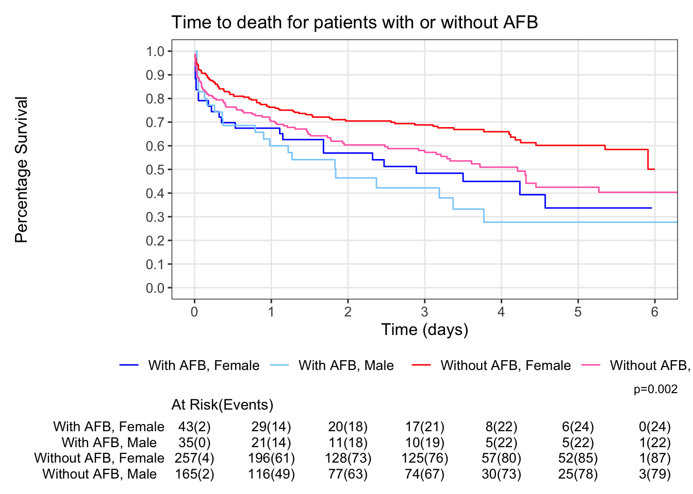

Survival Analysis Using R
The most commonly used survival analysis methods in clinical trials include:
Kaplan-Meier (KM) estimators: non-parametric statistics utilized for estimating the survival function
Log-rank test: a non-parametric test for comparing the survival functions across two or more groups
Cox proportional hazards (PH) model: a semi-parametric model often used to assess the relationship between the survival time and explanatory variables
Additionally, other methods for analyzing time-to-event data are available, such as:
Parametric survival model
Accelerated failure time model
Competing risk model
Restricted mean survival time
Time-dependent Cox model
While these models may be explored in a separate document, this particular document focuses solely on the three most prevalent methods: KM estimators, log-rank test and Cox PH model.
Analysis of Time-to-event Data
Below is a standard mock-up for survival analysis in clinical trials.
Example Data
Data source: https://stats.idre.ucla.edu/sas/seminars/sas-survival/
The data include 500 subjects from the Worcester Heart Attack Study. This study examined several factors, such as age, gender and BMI, that may influence survival time after heart attack. Follow up time for all participants begins at the time of hospital admission after heart attack and ends with death or loss to follow up (censoring). The variables used here are:
lenfol: length of followup, terminated either by death or censoring - time variable
fstat: loss to followup = 0, death = 1 - censoring variable
afb: atrial fibrillation, no = 0, 1 = yes - explanatory variable
gender: males = 0, females = 1 - stratification factor
library(tidyverse)
library(haven)
library(survival)
library(survminer)
library(ggsurvfit)
library(broom)
library(knitr)
knitr::opts_chunk$set(echo = TRUE)
dat <- haven::read_sas(file.path("../data/whas500.sas7bdat")) |>
mutate(
LENFOLY = round(LENFOL / 365.25, 2), ## change follow-up days to years for better visualization
AFB = factor(AFB, levels = c(1, 0))
) ## change AFB order to use "Yes" as the reference group to be consistent with SASThe Non-stratified Model
First we try a non-stratified analysis following the mock-up above to describe the association between survival time and afb (atrial fibrillation).
The KM estimators are from survival::survfit function, the log-rank test uses survminer::surv_pvalue, and Cox PH model is conducted using survival::coxph function. Numerous R packages and functions are available for performing survival analysis. The author has selected survival and survminer for use in this context, but alternative options can also be employed for survival analysis.
KM estimators
fit.km <- survival::survfit(survival::Surv(LENFOLY, FSTAT) ~ AFB, data = dat)
## quantile estimates
quantile(fit.km, probs = c(0.25, 0.5, 0.75))$quantile
25 50 75
AFB=1 0.26 2.37 6.43
AFB=0 0.94 5.91 6.44
$lower
25 50 75
AFB=1 0.05 1.27 4.24
AFB=0 0.55 4.32 6.44
$upper
25 50 75
AFB=1 1.11 4.24 NA
AFB=0 1.47 NA NA## landmark estimates at 1, 3, 5-year
summary(fit.km, times = c(1, 3, 5))Call: survfit(formula = survival::Surv(LENFOLY, FSTAT) ~ AFB, data = dat)
AFB=1
time n.risk n.event survival std.err lower 95% CI upper 95% CI
1 50 28 0.641 0.0543 0.543 0.757
3 27 12 0.455 0.0599 0.351 0.589
5 11 6 0.315 0.0643 0.211 0.470
AFB=0
time n.risk n.event survival std.err lower 95% CI upper 95% CI
1 312 110 0.739 0.0214 0.699 0.782
3 199 33 0.642 0.0245 0.595 0.691
5 77 20 0.530 0.0311 0.472 0.595Log-rank test
There are multiple ways to output the log-rank test. The survdiff() function from {survival} package performs a log-rank test (or its weighted variants) to compare survival curves between two or more treatment groups. rho=0 is the default and gives the standard log-rank test. rho=1 would output the Peto-Peto test (which weights earliest events more heavily).
You can also use {survminer} package as shown below or {ggsurvfit} package using add_pvalue option if you want the p-value to be put into a KM plot - See example in Kaplan Meier section below.
#survdiff() from survival package: unrounded pvalue=0.0009646027
survdiff(Surv(LENFOLY, FSTAT) ~ AFB, data = dat, rho=0)Call:
survdiff(formula = Surv(LENFOLY, FSTAT) ~ AFB, data = dat, rho = 0)
N Observed Expected (O-E)^2/E (O-E)^2/V
AFB=1 78 47 30.3 9.26 10.9
AFB=0 422 168 184.7 1.52 10.9
Chisq= 10.9 on 1 degrees of freedom, p= 0.001 #surv_pvalue() from survminer
survminer::surv_pvalue(fit.km, data = dat) variable pval method pval.txt
1 AFB 0.0009646027 Log-rank p = 0.00096Cox PH model
fit.cox <- survival::coxph(survival::Surv(LENFOLY, FSTAT) ~ AFB, data = dat)
fit.cox |>
tidy(exponentiate = TRUE, conf.int = TRUE, conf.level = 0.95) |>
select(term, estimate, conf.low, conf.high)# A tibble: 1 × 4
term estimate conf.low conf.high
<chr> <dbl> <dbl> <dbl>
1 AFB0 0.583 0.421 0.806The Stratified Model
In a stratified model, the Kaplan-Meier estimators remain the same as those in the non-stratified model. To implement stratified log-rank tests and Cox proportional hazards models, simply include the strata() function within the model formula.
Stratified Log-rank test
fit.km.str <- survival::survfit(
survival::Surv(LENFOLY, FSTAT) ~ AFB + survival::strata(GENDER),
data = dat
)
survminer::surv_pvalue(fit.km.str, data = dat) variable pval method pval.txt
1 AFB+survival::strata(GENDER) 0.0004479027 Log-rank p = 0.00045Stratified Cox PH model
fit.cox.str <- survival::coxph(
survival::Surv(LENFOLY, FSTAT) ~ AFB + survival::strata(GENDER),
data = dat
)
fit.cox.str |>
tidy(exponentiate = TRUE, conf.int = TRUE, conf.level = 0.95) |>
select(term, estimate, conf.low, conf.high)# A tibble: 2 × 4
term estimate conf.low conf.high
<chr> <dbl> <dbl> <dbl>
1 AFB0 0.596 0.431 0.825
2 survival::strata(GENDER)GENDER=1 1.44 1.10 1.88 Kaplan-Meier Graphs
You can use {survminer} or {ggsurvfit} packages to create kaplan-meier graphs including presentation of the number at risk and number of events under the graph. Both methods are highly customizable.
It is good practice to ensure your categorical factors are specified as such and are clearly labelled. {forcats} package is useful for recoding factors as shown below using fct_recode().
{ggsurvfit} is shown here because the code coverage is higher for this package than for {survminer}.
The code below, fits the model, adds a log-rank test p-value, limits the X axis, controls the major scale and minor scale of Y and X axis, adds a risk table under the graph showing number at risk and the cumulative events, color codes the lines to allow easy identification of AFB and Gender and adds appropriate titles and axis labels.
dat2<- dat %>%
mutate(Treatment=fct_recode(AFB, 'Without AFB'='0','With AFB'='1')) %>%
mutate(GENDER_F = factor(GENDER, labels=c('Female','Male')))
survfit2(Surv(LENFOLY, FSTAT) ~ Treatment + strata(GENDER_F), data = dat2) %>%
ggsurvfit() +
add_pvalue(rho=0) +
coord_cartesian(xlim = c(0, 6)) +
scale_y_continuous(breaks = seq(0, 1, by = 0.1), minor_breaks=NULL) +
scale_x_continuous(breaks = seq(0, 6, by = 1), minor_breaks=NULL) +
add_risktable(risktable_stats='{n.risk}({cum.event})') +
scale_color_manual(values=c('Blue','lightskyblue','red','hotpink')) +
labs(y='Percentage Survival',
x='Time (days)',
title='Time to death for patients with or without AFB')
Reference
─ Session info ───────────────────────────────────────────────────────────────
setting value
version R version 4.4.2 (2024-10-31)
os Ubuntu 24.04.3 LTS
system x86_64, linux-gnu
ui X11
language (EN)
collate C.UTF-8
ctype C.UTF-8
tz UTC
date 2025-09-02
pandoc 3.6.3 @ /opt/quarto/bin/tools/ (via rmarkdown)
─ Packages ───────────────────────────────────────────────────────────────────
! package * version date (UTC) lib source
P abind 1.4-8 2024-09-12 [?] RSPM (R 4.4.0)
askpass 1.2.1 2024-10-04 [1] RSPM (R 4.4.0)
P backports 1.5.0 2024-05-23 [?] RSPM (R 4.4.0)
base64enc 0.1-3 2015-07-28 [1] RSPM (R 4.4.0)
bit 4.5.0 2024-09-20 [1] RSPM (R 4.4.0)
bit64 4.5.2 2024-09-22 [1] RSPM (R 4.4.0)
blob 1.2.4 2023-03-17 [1] RSPM (R 4.4.0)
boot 1.3-31 2024-08-28 [2] CRAN (R 4.4.2)
P broom * 1.0.7 2024-09-26 [?] RSPM (R 4.4.0)
bslib 0.8.0 2024-07-29 [1] RSPM (R 4.4.0)
cachem 1.1.0 2024-05-16 [1] RSPM (R 4.4.0)
callr 3.7.6 2024-03-25 [1] RSPM (R 4.4.0)
P car 3.1-3 2024-09-27 [?] RSPM (R 4.4.0)
P carData 3.0-5 2022-01-06 [?] RSPM (R 4.4.0)
cellranger 1.1.0 2016-07-27 [1] RSPM (R 4.4.0)
P cli 3.6.3 2024-06-21 [?] RSPM (R 4.4.0)
clipr 0.8.0 2022-02-22 [1] RSPM (R 4.4.0)
P colorspace 2.1-1 2024-07-26 [?] RSPM (R 4.4.0)
commonmark 1.9.2 2024-10-04 [1] RSPM (R 4.4.0)
conflicted 1.2.0 2023-02-01 [1] RSPM (R 4.4.0)
corrplot 0.94 2024-08-17 [1] RSPM (R 4.4.0)
cowplot 1.1.3 2024-01-22 [1] RSPM (R 4.4.0)
cpp11 0.5.0 2024-08-27 [1] RSPM (R 4.4.0)
crayon 1.5.3 2024-06-20 [1] RSPM (R 4.4.0)
curl 5.2.3 2024-09-20 [1] RSPM (R 4.4.0)
P data.table 1.16.0 2024-08-27 [?] RSPM (R 4.4.0)
DBI 1.2.3 2024-06-02 [1] RSPM (R 4.4.0)
dbplyr 2.5.0 2024-03-19 [1] RSPM (R 4.4.0)
Deriv 4.1.6 2024-09-13 [1] RSPM (R 4.4.0)
P digest 0.6.37 2024-08-19 [?] RSPM (R 4.4.0)
doBy 4.6.24 2024-10-07 [1] RSPM (R 4.4.0)
P dplyr * 1.1.4 2023-11-17 [?] RSPM (R 4.4.0)
dtplyr 1.3.1 2023-03-22 [1] RSPM (R 4.4.0)
P evaluate 1.0.0 2024-09-17 [?] RSPM (R 4.4.0)
exactRankTests 0.8-35 2022-04-26 [1] RSPM (R 4.4.0)
P fansi 1.0.6 2023-12-08 [?] RSPM (R 4.4.0)
P farver 2.1.2 2024-05-13 [?] RSPM (R 4.4.0)
P fastmap 1.2.0 2024-05-15 [?] RSPM (R 4.4.0)
fontawesome 0.5.2 2023-08-19 [1] RSPM (R 4.4.0)
P forcats * 1.0.0 2023-01-29 [?] RSPM (R 4.4.0)
P Formula 1.2-5 2023-02-24 [?] RSPM (R 4.4.0)
fs 1.6.4 2024-04-25 [1] RSPM (R 4.4.0)
gargle 1.5.2 2023-07-20 [1] RSPM (R 4.4.0)
P generics 0.1.3 2022-07-05 [?] RSPM (R 4.4.0)
P ggplot2 * 3.5.1 2024-04-23 [?] RSPM (R 4.4.0)
P ggpubr * 0.6.0 2023-02-10 [?] RSPM (R 4.4.0)
ggrepel 0.9.6 2024-09-07 [1] RSPM (R 4.4.0)
ggsci 3.2.0 2024-06-18 [1] RSPM (R 4.4.0)
P ggsignif 0.6.4 2022-10-13 [?] RSPM (R 4.4.0)
P ggsurvfit * 1.1.0 2024-05-08 [?] RSPM (R 4.4.0)
ggtext 0.1.2 2022-09-16 [1] RSPM (R 4.4.0)
P glue 1.8.0 2024-09-30 [?] RSPM (R 4.4.0)
googledrive 2.1.1 2023-06-11 [1] RSPM (R 4.4.0)
googlesheets4 1.1.1 2023-06-11 [1] RSPM (R 4.4.0)
P gridExtra 2.3 2017-09-09 [?] RSPM (R 4.4.0)
gridtext 0.1.5 2022-09-16 [1] RSPM (R 4.4.0)
P gtable 0.3.5 2024-04-22 [?] RSPM (R 4.4.0)
P haven * 2.5.4 2023-11-30 [?] RSPM (R 4.4.0)
highr 0.11 2024-05-26 [1] RSPM (R 4.4.0)
P hms 1.1.3 2023-03-21 [?] RSPM (R 4.4.0)
P htmltools 0.5.8.1 2024-04-04 [?] RSPM (R 4.4.0)
httr 1.4.7 2023-08-15 [1] RSPM (R 4.4.0)
ids 1.0.1 2017-05-31 [1] RSPM (R 4.4.0)
isoband 0.2.7 2022-12-20 [1] RSPM (R 4.4.0)
jpeg 0.1-10 2022-11-29 [1] RSPM (R 4.4.0)
jquerylib 0.1.4 2021-04-26 [1] RSPM (R 4.4.0)
P jsonlite 1.8.9 2024-09-20 [?] RSPM (R 4.4.0)
P km.ci 0.5-6 2022-04-06 [?] RSPM (R 4.4.0)
P KMsurv 0.1-5 2012-12-03 [?] RSPM (R 4.4.0)
P knitr * 1.50 2025-03-16 [?] RSPM (R 4.4.0)
P labeling 0.4.3 2023-08-29 [?] RSPM (R 4.4.0)
lattice 0.22-6 2024-03-20 [2] CRAN (R 4.4.2)
P lifecycle 1.0.4 2023-11-07 [?] RSPM (R 4.4.0)
lme4 1.1-35.5 2024-07-03 [1] RSPM (R 4.4.0)
P lubridate * 1.9.3 2023-09-27 [?] RSPM (R 4.4.0)
P magrittr 2.0.3 2022-03-30 [?] RSPM (R 4.4.0)
markdown 1.13 2024-06-04 [1] RSPM (R 4.4.0)
MASS 7.3-61 2024-06-13 [2] CRAN (R 4.4.2)
Matrix 1.7-1 2024-10-18 [2] CRAN (R 4.4.2)
MatrixModels 0.5-3 2023-11-06 [1] RSPM (R 4.4.0)
maxstat 0.7-25 2017-03-02 [1] RSPM (R 4.4.0)
memoise 2.0.1 2021-11-26 [1] RSPM (R 4.4.0)
mgcv 1.9-1 2023-12-21 [2] CRAN (R 4.4.2)
microbenchmark 1.5.0 2024-09-04 [1] RSPM (R 4.4.0)
mime 0.12 2021-09-28 [1] RSPM (R 4.4.0)
minqa 1.2.8 2024-08-17 [1] RSPM (R 4.4.0)
modelr 0.1.11 2023-03-22 [1] RSPM (R 4.4.0)
P munsell 0.5.1 2024-04-01 [?] RSPM (R 4.4.0)
mvtnorm 1.3-1 2024-09-03 [1] RSPM (R 4.4.0)
nlme 3.1-166 2024-08-14 [2] CRAN (R 4.4.2)
nloptr 2.1.1 2024-06-25 [1] RSPM (R 4.4.0)
nnet 7.3-19 2023-05-03 [2] CRAN (R 4.4.2)
numDeriv 2016.8-1.1 2019-06-06 [1] RSPM (R 4.4.0)
openssl 2.2.2 2024-09-20 [1] RSPM (R 4.4.0)
P patchwork 1.3.0 2024-09-16 [?] RSPM (R 4.4.0)
pbkrtest 0.5.3 2024-06-26 [1] RSPM (R 4.4.0)
P pillar 1.9.0 2023-03-22 [?] RSPM (R 4.4.0)
P pkgconfig 2.0.3 2019-09-22 [?] RSPM (R 4.4.0)
png 0.1-8 2022-11-29 [1] RSPM (R 4.4.0)
polynom 1.4-1 2022-04-11 [1] RSPM (R 4.4.0)
prettyunits 1.2.0 2023-09-24 [1] RSPM (R 4.4.0)
processx 3.8.4 2024-03-16 [1] RSPM (R 4.4.0)
progress 1.2.3 2023-12-06 [1] RSPM (R 4.4.0)
ps 1.8.0 2024-09-12 [1] RSPM (R 4.4.0)
P purrr * 1.0.2 2023-08-10 [?] RSPM (R 4.4.0)
quantreg 5.98 2024-05-26 [1] RSPM (R 4.4.0)
P R6 2.5.1 2021-08-19 [?] RSPM (R 4.4.0)
ragg 1.3.3 2024-09-11 [1] RSPM (R 4.4.0)
rappdirs 0.3.3 2021-01-31 [1] RSPM (R 4.4.0)
RColorBrewer 1.1-3 2022-04-03 [1] RSPM (R 4.4.0)
Rcpp 1.0.13 2024-07-17 [1] RSPM (R 4.4.0)
RcppEigen 0.3.4.0.2 2024-08-24 [1] RSPM (R 4.4.0)
P readr * 2.1.5 2024-01-10 [?] RSPM (R 4.4.0)
readxl 1.4.3 2023-07-06 [1] RSPM (R 4.4.0)
rematch 2.0.0 2023-08-30 [1] RSPM (R 4.4.0)
rematch2 2.1.2 2020-05-01 [1] RSPM (R 4.4.0)
reprex 2.1.1 2024-07-06 [1] RSPM (R 4.4.0)
P rlang 1.1.6 2025-04-11 [?] RSPM (R 4.4.0)
P rmarkdown 2.28 2024-08-17 [?] RSPM (R 4.4.0)
P rstatix 0.7.2 2023-02-01 [?] RSPM (R 4.4.0)
rstudioapi 0.16.0 2024-03-24 [1] RSPM (R 4.4.0)
rvest 1.0.4 2024-02-12 [1] RSPM (R 4.4.0)
sass 0.4.9 2024-03-15 [1] RSPM (R 4.4.0)
P scales 1.3.0 2023-11-28 [?] RSPM (R 4.4.0)
selectr 0.4-2 2019-11-20 [1] RSPM (R 4.4.0)
SparseM 1.84-2 2024-07-17 [1] RSPM (R 4.4.0)
P stringi 1.8.4 2024-05-06 [?] RSPM (R 4.4.0)
P stringr * 1.5.1 2023-11-14 [?] RSPM (R 4.4.0)
survival * 3.7-0 2024-06-05 [2] CRAN (R 4.4.2)
P survminer * 0.4.9 2021-03-09 [?] RSPM (R 4.4.0)
P survMisc 0.5.6 2022-04-07 [?] RSPM (R 4.4.0)
sys 3.4.3 2024-10-04 [1] RSPM (R 4.4.0)
systemfonts 1.1.0 2024-05-15 [1] RSPM (R 4.4.0)
textshaping 0.4.0 2024-05-24 [1] RSPM (R 4.4.0)
P tibble * 3.2.1 2023-03-20 [?] RSPM (R 4.4.0)
P tidyr * 1.3.1 2024-01-24 [?] RSPM (R 4.4.0)
P tidyselect 1.2.1 2024-03-11 [?] RSPM (R 4.4.0)
P tidyverse * 2.0.0 2023-02-22 [?] RSPM (R 4.4.0)
P timechange 0.3.0 2024-01-18 [?] RSPM (R 4.4.0)
tinytex 0.53 2024-09-15 [1] RSPM (R 4.4.0)
P tzdb 0.4.0 2023-05-12 [?] RSPM (R 4.4.0)
P utf8 1.2.4 2023-10-22 [?] RSPM (R 4.4.0)
uuid 1.2-1 2024-07-29 [1] RSPM (R 4.4.0)
P vctrs 0.6.5 2023-12-01 [?] RSPM (R 4.4.0)
viridisLite 0.4.2 2023-05-02 [1] RSPM (R 4.4.0)
vroom 1.6.5 2023-12-05 [1] RSPM (R 4.4.0)
P withr 3.0.1 2024-07-31 [?] RSPM (R 4.4.0)
P xfun 0.52 2025-04-02 [?] RSPM (R 4.4.0)
xml2 1.3.6 2023-12-04 [1] RSPM (R 4.4.0)
P xtable 1.8-4 2019-04-21 [?] RSPM (R 4.4.0)
P yaml 2.3.10 2024-07-26 [?] RSPM (R 4.4.0)
P zoo 1.8-12 2023-04-13 [?] RSPM (R 4.4.0)
[1] /home/runner/work/CAMIS/CAMIS/renv/library/linux-ubuntu-noble/R-4.4/x86_64-pc-linux-gnu
[2] /opt/R/4.4.2/lib/R/library
P ── Loaded and on-disk path mismatch.
──────────────────────────────────────────────────────────────────────────────